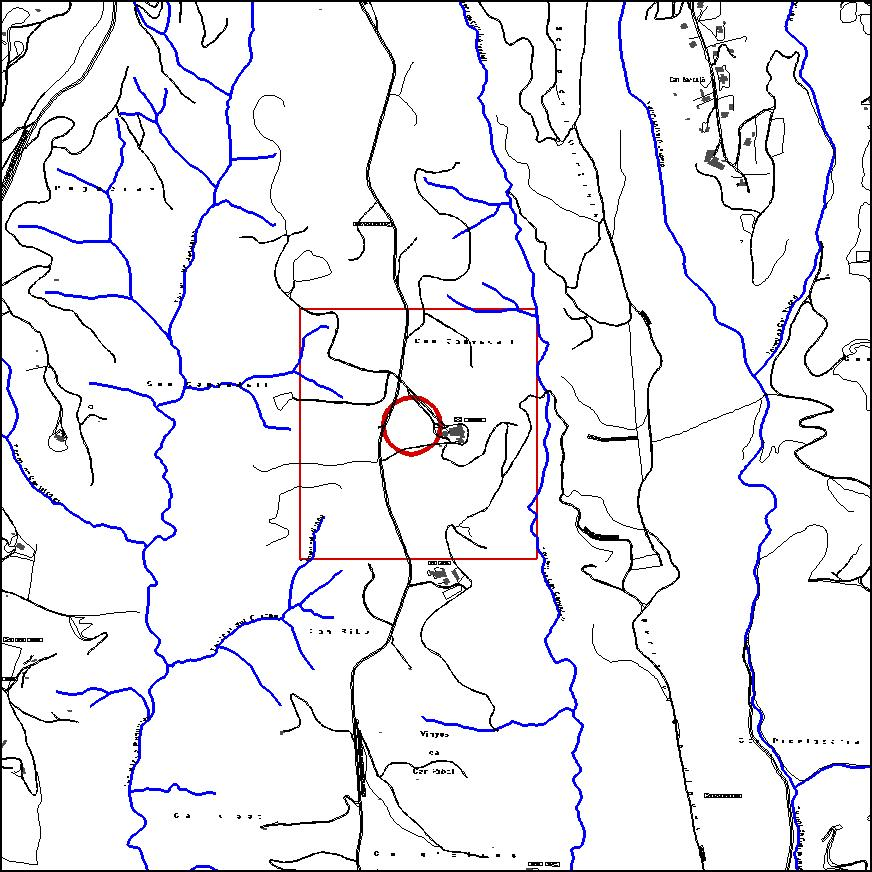

|
|
 |
Nom de l’element: Turó de Can Canyadell
Clau d’identificació: D.07
Nucli o indret: Turó de Can Canyadell, Ctra. de Castellbisbal a Terrassa km 7, 7.
UTM: X= 415.174, Y= 4.596.107, 240 m s.n.m.
Règim del sòl: Sòl no urbanitzable.
Característiques:
Turó que acull un bosc adult de pi, assolint una alçada aproximada d’entre 10-12m. S’hi han trobat trossos de murs, relacionats amb el monestir de monges agustines que es localitzà a la zona, el qual es trobava sota l’advocació de Santa Magdalena i Santa Margarida (1331).
1.2. Estat de conservació:
Molt bo.
1.3. Ús actual:
Ecològic, actuant com a font de dispersió de llavors de pinyons a les zones del voltant, doncs es tracta d’una illa de vegetació envoltada de superfície cremada. D’aquesta manera, es garanteix la regeneració natural d’aquestes zones.
1.4. Accés:
Accés fàcil des de la carretera B-151 i per pista forestal en direcció a la masia de Can Canyadell. Es troba al costat de l’esmentada masia.
Font de dispersió de llavors de pi a les zones cremades del voltant actuant com agent regenerador del paisatge i de l’ecosistema.
3.1. Usos admesos:
Espais lliures, recreatiu cultural.
3.2. Condicions d’ordenació:
Segons Pla Especial a redactar.
3.3. Accés
Carretera de Castellbisbal a Terrassa.
BCIL (Bé Cultural d’Interès Local)